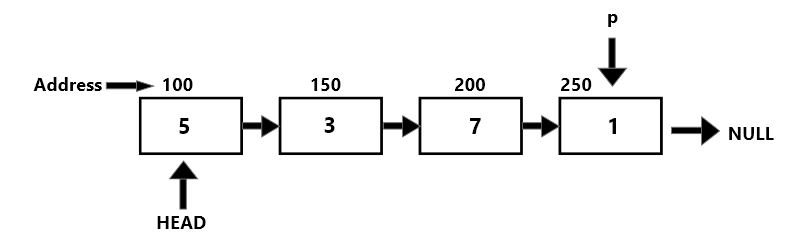
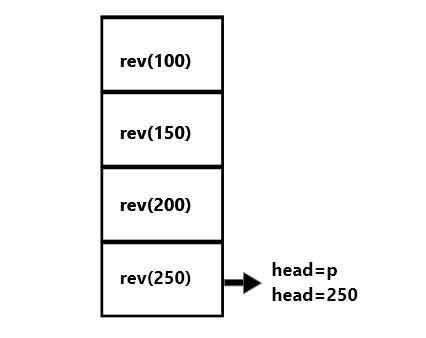
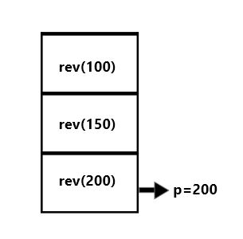
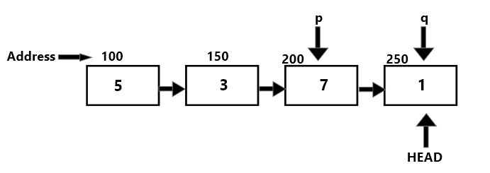
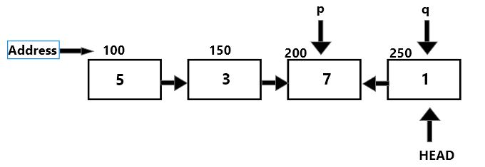
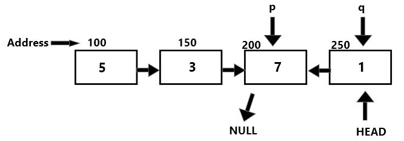

Reverse a linked list recursively
A linked list can be reversed either iteratively or recursively. The recursive way of reversing a linked list can be very tricky to understand. We will have a look at how the recursion stack is formed and the operations we are performing to reverse the list to make sure we understand what each line of code does rather than memorizing it blindly.
node* rev(node* p)
{
if(p==NULL || p->next==NULL)
{
head=p;
return head;
}
rev(p->next);
node *q=p->next;
q->next=p;
p->next=NULL;
return head;
}
This is the code we use to reverse the linked list recursively.
There are a few things we should keep in mind:
- It returns the original head of the linked list. Which means that no values are changed, only the links are reversed.
- The head of the linked list is passed to the function by pass by value method because we don't want to disturb the original head.
The line rev(p->next); will keep calling the function again and again till we reach the last node of linked list, that's when p->next==NULL and the base condition is met.
The list will look like this:
The last node is p now.
And now we have to make head store the address of this node. Let's have a look at the stack.
After the making head store address of p, we start to move up along the stack.
we can see that we reached the second last node of list, now we access the last node from here and make it q.
Now all we have left to do is reverse the link by making q->next point to p. And then making p point to null.

This process of moving p and q backwards and reversing the links continues till the whole stack is empty. And we obtain the linked list in a reversed fashion.